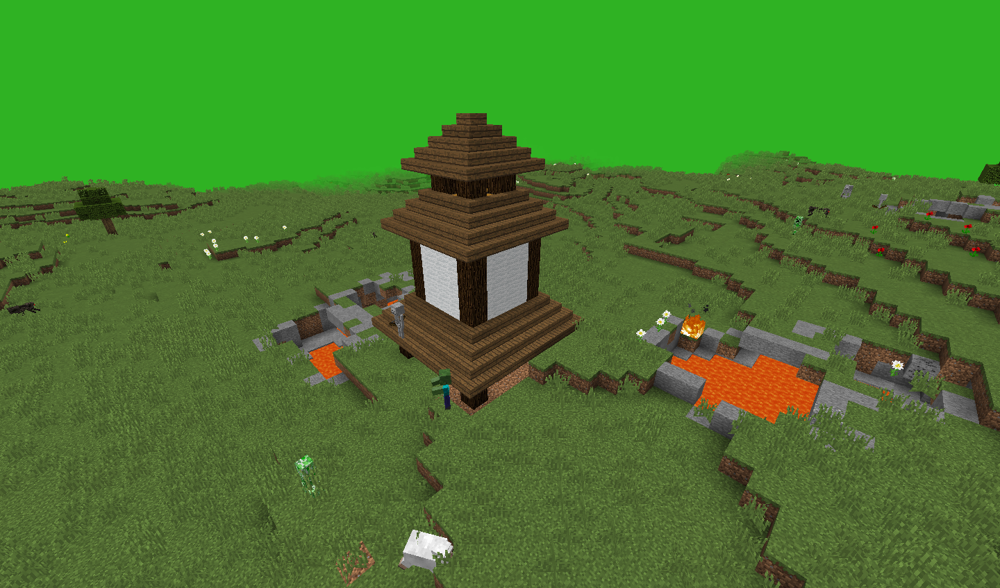

ƒом разбойников. ƒом содержит загон дл€ коров и овец, а также сам дом, где обитают разбойники и другие монстры. ¬ доме довольно много тайников, поэтому все награды в нем найти довольно сложно. Ёто сама€ редка€ структура во всем моде, также она встречаетс€ только в мире подземелий. ≈сли вы найдете подземелье, вам определенно не будут нужны ресурсы еще довольно долго. “акже эта структура считаетс€ одной из самых опасных, поэтому без хорошего снар€жени€ туда идти нежелательно.
